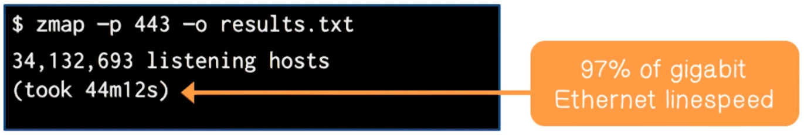
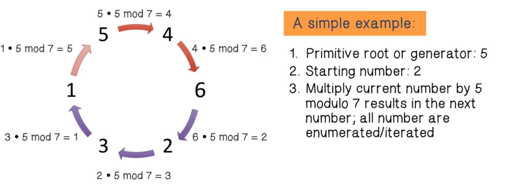
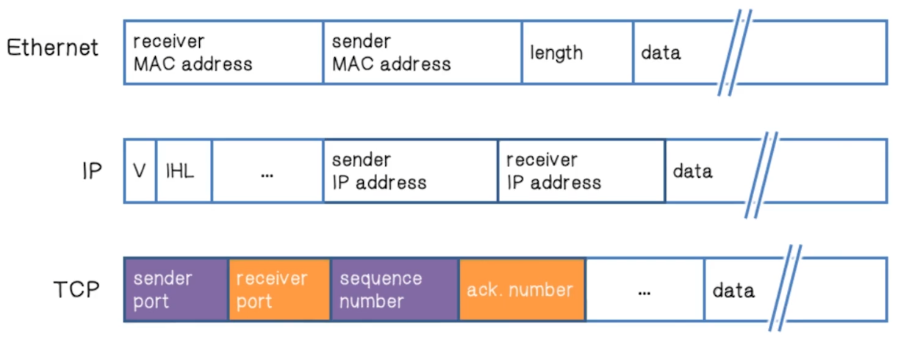
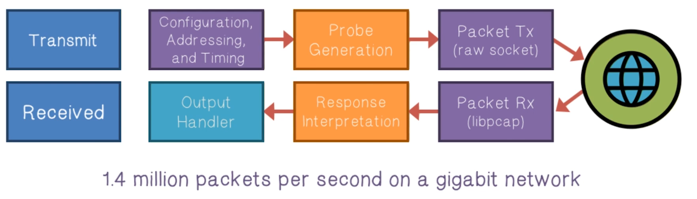
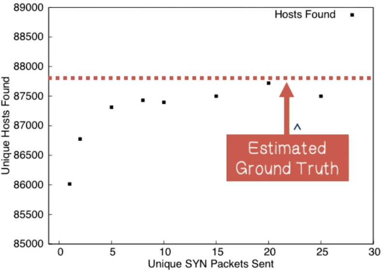
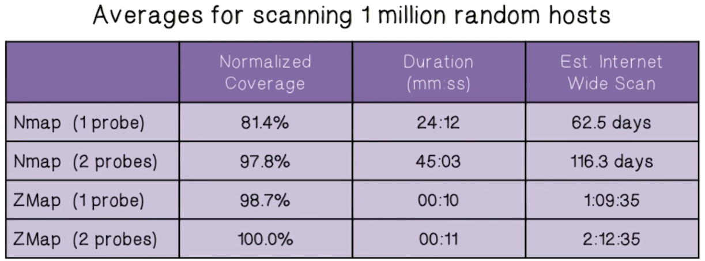
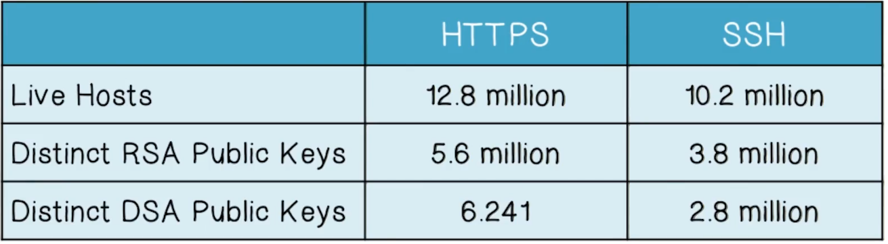
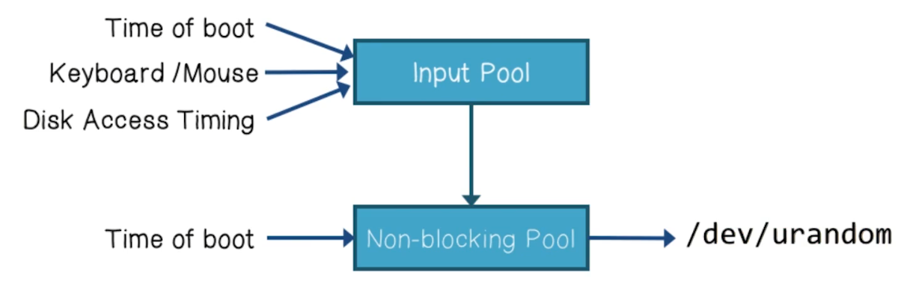
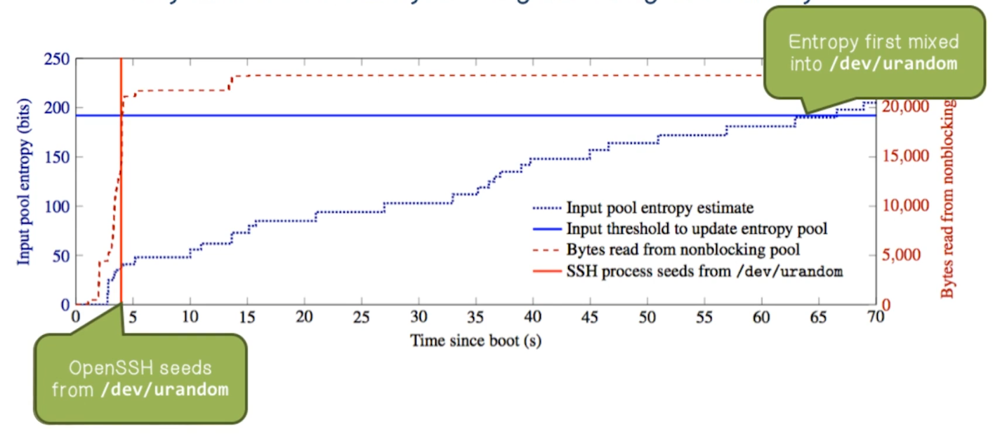

NetSec Lecture Notes - Lesson 15 - Internet-Scale Threat Analysis -- Scanning
Internet-Scale Threat Analysis: Scanning
- The internet is a large ecosystem of networks, and thus has many vulnerabilities
Attacker Intelligence Quiz
Attackers have three phases of intelligence gathering
- The attacker uses the internet to obtain information on specific IP addresses. The kind of information gathered is: OS, services, and architecture of the target system
- Scanning
- The attacker gathers information about a target. The kind of information gathered is: DNS, email servers, and the IP address range
- Footprinting
- The attacker gathers information on network user and group names, routing tables, and simple network management protocol
- Enumeration
Internet-Wide Security Scanning
- Expose new vulnerabilities
- Track adoption of defensive mechanisms
- Probing the ENTIRE address space with existing tools is both difficult and slow
- However the combination of a dataset of cryptographic keys plus dataset of the entire address space grants detection of vulnerabilities and understanding of the ecosystem
Internet-Wide Network Studies
- There have been several influential studies conducted
- Mining Ps and Qs Widespread weak keys in network devices (2012)
- Vulnerabilities in 5% of HTTPS hosts and 10% of SSH hosts
- However, took 25 hours across 25 Amazon EC2 instances (625 CPU-hours) to complete
- EFF SSL Observatory: A glimpse at the CA ecosystem (2010)
- 3 months on 3 Linux desktop machines (6500 CPU-hours)
- Census and Survey of the Visible Internet (2008)
- 3 months to complete ICMP census (2200 CPU-hours)
Zmap
- What if Internet surveys didn’t require heroic efforts?
- What if we could scan the HTTPS ecosystem every day?
- What if we wrote a whole-Internet scanner from scratch?
- Zmap!
- Open source tool
- Can port scan the entire IPv4 address space
- Can do so in under 45 minutes on a gigabit network at 97% of the speed of gigabit Ethernet with 98% coverage
- 
- Architecture
- Existing network scanners: Reduce state by scanning in batches. Time lost due to blocking, results lost due to timeouts
- Zmap: Eliminate local per-connection state. Full asynchronous components. No blocking except for network
- Existing network scanners: Track individual hosts and retransmit. Most hosts will not respond.
- Zmap: Shotgun scanning approach. Always send
nprobes per host
- Zmap: Shotgun scanning approach. Always send
- Existing network scanners: Avoid flooding through timing. Time lost waiting.
- Zmap: Scan widely dispersed targets. Send as fast as network allows.
- Existing network scanners: Utilize existing OS network stack. Not optimized for immense number of connections.
- Zmap: Probe-optimized network stack. Bypass inefficiencies by generating Ethernet frames.
Addressing Probes
- How do we randomly scan addresses without excessive state?
- If we simply scan addresses in numerical order, we risk overloading our destination.
- However we also don’t want to waste time tracking what has been vs still needs to be scanned.
- Scan hosts according to random permutation
- Iterate over multiplicative group of integers modulo p, a prime slightly larger than 232
- 
- How do we randomly scan addresses without excessive state?
- Select a fresh random permutation of the address space for each scan
- Generate a primitive root, or a generator, of the multiplicative group
- Only state needed, then, is:
- Primitive root
- Current address being scanned
- First address scanned so we know when we’re back to the beginning
TCP IP Quiz
- Which protocol is used to break data into packets?
- TCP
- Which protocol is used to move packets from router to router?
- IP
- Which protocol reassembles the data packets?
- TCP
Validating Responses
- How do we validate responses without local per-target state?
- Encode secrets into mutable fields of probe packets that will have recognizable effect on responses
- Similar to SYN cookies
- We know that port and sequence will be included in response, so add encoded information to those to allow analysis of who’s responding
- 
- 
Scan Rate
- How fast is too fast?
- Researches conducted trials. Done by configuring NICs to adjust rate.
- They found no correlation between hit-rate and scan-rate
- This leads to the conclusion that slower scanning does not reveal additional hosts
Coverage
- Is one probe packet sufficient?
- Researches conducted trials by sending multiple packets to samples of the IPv4 address space.
- 
- A plateau can be observed after about 8 packets
- We expect an eventual plateau in responsive hosts, regardless of additional probes
- Trial provide coverage estimates:
- 1 packet: 97.9%
- 2 packets: 98.8%
- 3 packets: 99.4%
Zmap Comparison With Nmap
- Researches conducted a study, against 1 million addresses
- 
- Zmap is capable of scanning more than 1300 times faster than the most aggressive Nmap default configuration (“insane” template)
- Surprisingly, Zmap also finds more results than Nmap
- Nmap is optimized for very different use cases than Zmap
Why does Zmap find more hosts than Nmap?
- Nmap times out hosts, after 250ms if one-packet scan, after 500ms if two-packet scan
- Response times have a long tail that nmap misses
- 250ms: <85%
- 500ms: 98.2%
- 1.0s: 99.0%
- 8.2s: 99.9%
- Thus, statelesness leads to both higher performance and increased coverage
Entropy Quiz
- With regards to computing, what is entropy?
- Randomness for use in cryptography or other applications that require random data
- What are the two sources of entropy?
- Hardware sources, and randomness generators
- A lack of entropy will have a negative impact on performance and security?
Cryptographic Keys
- Uncovering weak cryptographic keys and poor entropy collection
-
Research results: 
- Why are a large number of hosts sharing cryptographic keys?
- 5.6% of TLS hosts and 9.6% of SSH hosts share keys in a vulnerable manner
- Default certificates and keys
- Apparent entropy problems
Factoring RSA Public Keys
- What else could go wrong if devices aren’t collecting entropy?
- RSA Public Key:
n = p * q,pandqare two large, random primes - Most efficient known method of compromising an RSA key is to factor
nback topandq- Ideally, with large and random primes, this is prohibitively inefficient. Poor implementations remove this protection
- For example, given
N1= p*q1andN2= p*q2, we can trivially computep = GCD(N1,N2) - This scenario can arrise when machines to not have sufficient entropy available, and so may generate the same prime number
p
- Researchers were able to use efficient GCD calculation to crack lage numbers of RSA private keys
- Found 2,134 distinct primes and compute the RSA keys for 64,081(0.5%) of TLS hosts
- Using a similar approach for DSA, they were able to compute the private keys for 105,728 (1.03%) of SSH hosts
- Identified devices from >40 manufacturers
Embedded Systems
- Why do so many systems generate broken keys?
- Linux
/dev/urandom. Used by nearly everything - 
- Problem 1: Embedded devices may lack all these sources of entropy
- Problem 2:
/dev/urandomcan take a long time to warm up- Entropy is only mixed from input pool to non-blocking pool if input pool has collected more than 192 bits
- 
- Known as “Boot-Time Entropy Hole”
Certificate Authorities
- Nearly all secure web communication uses HTTPS
- Online banking, e-commerce, email, etc
- HTTPS is dependent on a supporting PKI composed of “certificate authorities”, which vouch for websites’ identities
- Every certificate authority can sign for any website
- There is no central repository of certificate authorities
- We don’t know who we trust until we see CAs in the wild
Certificate Chains
- Browsers decide who they trust (root CAs)
- These root CAs then decide to trust additional CAs. And so on ad infinitum
- How do we regularly collect certificates from the Internet?
- Researchers conducted >200 scans of the ecosystem in one year
- Identified certificate authorities
- Collected 42 million unique certificates from 109 million unique hosts in one year!
- Identified 1800 CA certificated belonging to 683 organizations
- Including religious institutions, libraries, non-profits, financial institutions, governments, and hospitals
- More than 80% of organizations controlling a CA certificate aren’t commercial certificate authorities
- Uncovered some worrisome practices
- More than half of the certificates were provided by the German National Research and Education Network (DFN)
- All major browser roots are selling intermediates to third-party organizations without any constraints
- Identified certificate authorities
- Who actually signs the certificates we use on a daily basis?
- 90% of trusted certificates were:
- signed by 5 organizations
- descendants of 4 roots
- signed by 40 intermediates
- Symantec, GoDaddy, and Comodo control 75% of the market through acquisitions
- 26% of trusted sites are signed by a single intermediate certificate!
- 90% of trusted certificates were:
CA Risks
- CAs are ignoring foundational principles such as defence in depth and the principle of least privilege
- We classically teach concepts such as defense in depth, and the principle of least privilege
- We have methods of (and damn good reasons for) constraining what CAs can sign for, yet all but 7 of the 1,800 CA certs found can sign for anything
- Lack of constraints allowed a rogue CA certificate in 2012, but in another case prevented 1,400 invalid certificates
- Almost 5% of certificates include local domains e.g. localhost, mail, exchange
- CAs are offering services that put the ecosystem as a whole at risk
- CAs are failing to recognize cryptographic reality
- 90% of certificates use a 2048 or 4096-bit RSA key
- 50% of certificates are rooted in a 1024-bit key
- More than 70% of these will expire after 2016 (dated)
- Still signing certifcates using MD5!
- Correctly deploying HTTPS remains difficult (this is dated, probably due to the time the course was recorded)
- Shows some dated metrics about HTTPS adoption (2012-2013 trends). LetsEncrypt was really a game-changer huh.